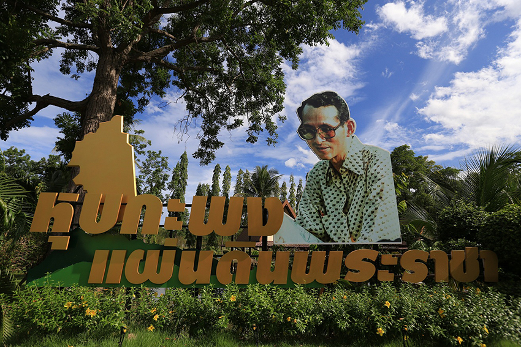

ตตั้งอยู่ในท้องที่ตำบลเขาใหญ่ และตำบลชะอำ อำเภอชะอำ จังหวัดเพชรบุรี จัดตั้งขึ้นเพื่อเป็นแหล่งเรียนรู้สำหรับประชาชนที่สนใจศึกษาดูงาน โดยจัดทำเป็นศูนย์นิทรรศการในอาคารคุ้มเกล้าสหกรณ์และอาคารนิทรรศการภาพพระราชกรณียกิจที่หุบกะพง
นอกจากนี้ยังสามารถเยี่ยมชมแปลงสาธิตเกษตร จากชีวิตจริงของชาวบ้านเกษตรกรตัวอย่างที่สามารถถ่ายทอดประสบการณ์ทางการเกษตรของพวกเขาได้เป็นอย่างดี นอกจากนี้ยังจัดแสดงเกี่ยวกับโครงการพระราชดำริต่าง ๆ ภาพถ่ายในอดีต และการจำลองแบบบ้านหลังแรกของเกษตรกรที่ได้อพยพเข้ามาอยู่ที่หุบกะพง เครื่องจักรการเกษตร และกังหันน้ำชัยพัฒนา
